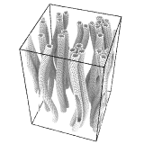
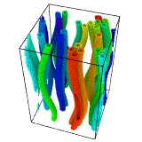

| Table of Contents | Cluster analysis | Up |
|---|---|---|
| Prev | Modifiers | Next |
| Table of Contents | Cluster analysis | Up |
|---|---|---|
| Prev | Modifiers | Next |
| Input: | Output: |
|

|

|
This modifier decomposes a particle system into disconnected sets of particles (clusters) based on a local neighboring criterion. The neighboring criterion can either be based on the distance between particles (i.e. a cutoff) or on the bond topology.
A cluster is defined as a set of connected particles, each of which is within the range of one or more other particles from the same cluster. Thus, any two particles from the same cluster are connected by a continuous path consisting only of steps fulfilling the selected neighboring criterion. Conversely, two particles will not belong to the same cluster if there is no continuous path on the neighbor network leading from one particle to the other.
You can choose between the distance-based neighbor criterion, in which case two particles are considered neighbors if they are within a specified range of each other, or the bond-based criterion, in which case two particles are considered neighbors if they are connected by a bond.
Note that a particle which possesses no neighbors forms a 1-particle cluster.
The modifier outputs its results to the Cluster particle property, which stores the
cluster each particle has been assigned to. Cluster IDs generated by the modifier range from 1 to N, where N
is the number of clusters found by the modifier.
Selects the criterion which is used to determine whether two particles are neighbors or not.
The range up to which two particles are considered neighbors when the distance-based criterion is selected.
If this option is active, the clustering algorithm is restricted to selected particles. Unselected particles will be treated as if they do not exist and will be assigned the cluster ID 0.
Enables the sorting of clusters by size (in descending order). Cluster ID 1 will be the largest cluster, cluster ID 2 the second largest, and so on.
To export the total number of clusters to a text file (possibly as a function of simulation time), use OVITO's
standard file export function. Choose the output file format Calculation Results Text File
and select the ClusterAnalysis.cluster_count attribute for export.
To export the list of particles belonging to each invidual cluster, also use OVITO's
standard file export function. Choose e.g. XYZ as the output file format
and select the Cluster property for export. This will produce a text file containing the
cluster ID assigned to each particle.
Computing and exporting the size of each cluster (i.e. the number of particles) requires a simple Python script. The following example script can be executed using the → menu function after manually applying the Cluster Analysis modifier:
import ovito
import numpy
output_filepath = "cluster_sizes.txt"
output = ovito.dataset.selected_node.compute()
cluster_sizes = numpy.bincount(output.particle_properties['Cluster'].array)
numpy.savetxt(output_filepath, cluster_sizes)
Please copy/paste the above script to a text editor and save it as .py file. Don't forget to adjust the output file path as needed. The script makes use
of the bincount() Numpy function to count the
number of particles belonging to each cluster. Note that the array returned by this function includes cluster ID 0, which is not assigned by the modifier
and therefore typically has size zero. For more information on OVITO's scripting interface, see this page.
It is possible to perform the file export for every frame in a simulation sequence by adding a for-loop to the script:
import ovito
import numpy
for frame in range(ovito.dataset.anim.last_frame + 1):
output_filepath = "cluster_sizes.%i.txt" % frame
output = ovito.dataset.selected_node.compute(frame)
cluster_sizes = numpy.bincount(output.particle_properties['Cluster'].array)
numpy.savetxt(output_filepath, cluster_sizes)